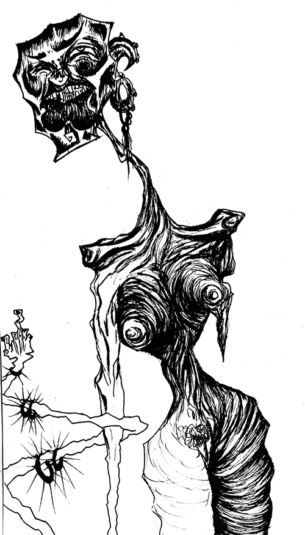
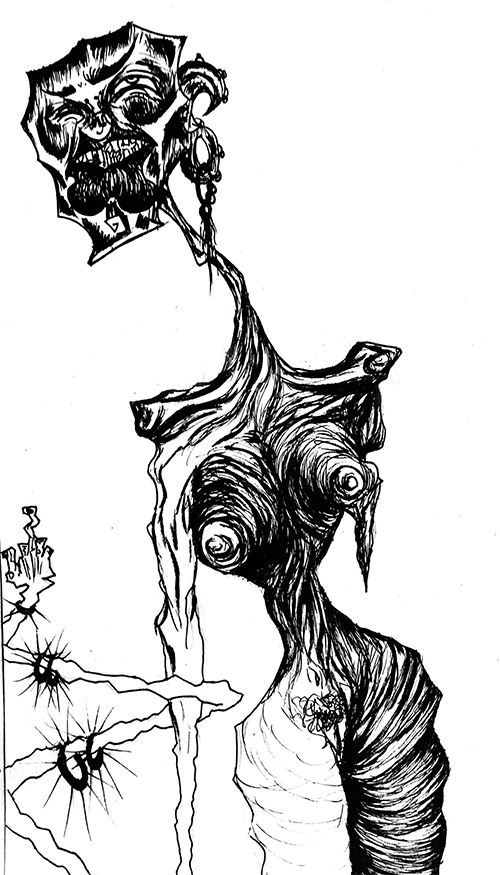
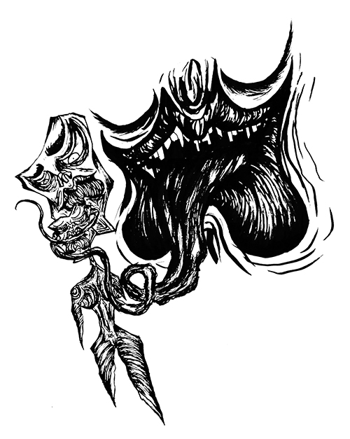
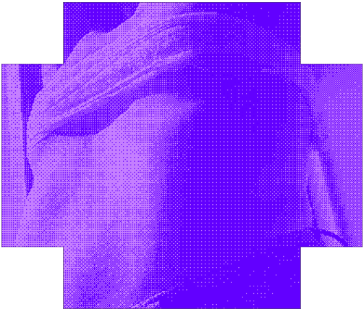

üû°
Not gay as in happy,
but Queer as in Fuck you
üû°
Beginning during the 1980’s as an offshoot of the punk subculture,
Queercore came to be a response to mainstream gay and punk culture from the time, as a new
subculture for those that did not fit a particular narrative from both subcultures. Since its
formation, Queercore was inherently political, fighting traditional values in punk and sexuality. It
shunned commercialism, capitalism, stayed on the sidelines, rejected mainstream values and was
rooted in gay and punk scenes.
Originally named Homocore, it was born as a zine that ran for eight issues – starting from 1985 to
1991. At the time, the zines featured themes such as explicit content as nudity and gays slurs since
they weren’t concerned with being taken seriously.
Queercore was known for embodying a general discontent with society regarding societal disapprove of
the LGBT community, issues and prejudices of sexual identity, gender identity, human rights,
political and religiousoppression and many others. It materialized itself in various ways: zines and
magazines, music, poetry, writing, art, film and performances.

OH
OH
OH
(.) (.)
LE MATRIXOU OH OH OH
Since 2019, I have developed a journaling habit. Usually, I write whatever
I feel like – my days, worries, anxieties and mental issues, shower thoughts, struggles with gender
identity, repugnance towards prejudice regarding homosexuality, representation of queer female
characters in shows or movies, gender expression, sexuality, feminism and religion. The intention is
to pour content written by me in the form of entries accompanied by photography, drawings and
screencaps.
Illustrations are created by one of my closest friends,
David Garcia
in which he represents the feminine body – a materialization of how and what they feel while
creating. Different art mediums allow them to exhibit different feminine personas.

Garcia, la vieille mature ❤
Cona (Cunt). Genitais são o foco do tabu. Gosto de mamas, porém mais de cu.
(Genitals are the focus of the tabu. I like breasts, although I enjoy ass much more.) I'm Garcia, that
hot mature woman that's 9km away from you. I am also other egos, but I don't
even bother understanding or naming them since they are in ceaseless mutation
only to be represented momentarily. A few ones can be given away, though — David, Manuel and És um Conas
(You're a Cunt). My alter egos are self-absorbed explorations that materialize
into self-analysis illustrations. Here is where I expose the egos influenced by emotions, objects,
animals or situations experienced.

When I started doing my first illustrations, it felt much more to me that the message I was eager to
pass was criticism towards society. It was more within the strokes of satire and irony. The theme
mostly present in my work was religion, specifically Christianity — this was also an unconscious
expansion of me. Still, at the time, I hadn't understood that yet. I might not think much of what I
*do*, but I indeed reflect on why I illustrate specific themes — on why I draw. That's when it came
to be: the feeling of imprisonment made around our naked bodies. It made me feel
desperate for genital freedom as it rouses questions about my
sexuality, gender identity and gender expression.
Meter Mamas, meter Conas, meter Pixas (To put Breasts, to put Vaginas, to put Dicks). Just put it
all in. I think it's normal for us, human beings, to question everything about ourselves, be it mind
and body. That's how my feminine self, Garcia, came to be. Slowly materializing parts of the
feminine body in various illustrations through expressive pencil loose strokes on paper to capture
my feelings until it became an expansion of myself. Later on, transmuted onto
physical incorporation.
There's a nexus between my illustrations and gender identity. Since I don't like to label myself,
exploring gender ideology and quotidian life through drawings, photography, or style allows me to
step outside the artificial chains of gender that society has created. Besides Garcia, which is the
feminine being that could care less about what the fuck you think about non-normative behaviours;
There's also És um Conas (You're a Cunt). És um Conas came to be from exploring conservatism and the
normative narrative that mainstream LGBTI+ culture has. Firstly this ego
arose as a joke using slangs to criticize conservative cunts. It is quite the labrega (big mouth)
scene — bicha labrega (big mouth faggot). I illustrate És um Conas as a provocative and judgemental
form whose only purpose is to embarrass the viewer. It's also the only alter ego that has a fix role
and structure.
While it has had significant growth, this contributed a ton to impersonate and understand my
illustration style. Of course, some things contribute as inspiration to my work. The bulk of it, I'd
say, comes from musical genres like post-punk, darkwave, fado and baroque; and cultural movements
such as Punk. Punk does have a considerable influence on my ideologies, and Garcia expresses itself
within those viewpoints.
Now, back to where we started: I'm Garcia, that hot mature woman that's 9km away from you. Wanna
meet & fuck?

 


Are you developing a nun fetish? Have you become fixated in the
"traditional sexy, sinful" nun? Congratulations, on the weird scale of porn fetishes, you rank 3!
While the nun isn't a category on most porn websites, it is still a niche regardless. Now, I'm talking about the nun in the context of the sacred and religious feminine figure regarding sexual worship — the model of the naughty, naughty, naughty nun.
While the nun isn't a category on most porn websites, it is still a niche regardless. Now, I'm talking about the nun in the context of the sacred and religious feminine figure regarding sexual worship — the model of the naughty, naughty, naughty nun.
Just for context, and before I dive deeper into this entry: I don't find my interest in this topic
astonishing due to my entire family (or at least almost all of it) being Christians.
Moving on, Catholicism is a theme that has accompanied me since childhood. Being taught all the good and juicy stuff of God and what not — raised some questions in the last few years as I grew to explore some bizarre underground shit. Not only this, but I firmly believe that growing up in a catholic family and being treated like some feminine religious figure who mustn't ever sin (while my cousins were encouraged to be macho) significantly contributed to my interest in themes like this. You can find other topics, like this, that interest me in the extra notes below.
I can happily say that the writing in this entry (and many others) would very much displease my family from my mother's side.
Moving on, Catholicism is a theme that has accompanied me since childhood. Being taught all the good and juicy stuff of God and what not — raised some questions in the last few years as I grew to explore some bizarre underground shit. Not only this, but I firmly believe that growing up in a catholic family and being treated like some feminine religious figure who mustn't ever sin (while my cousins were encouraged to be macho) significantly contributed to my interest in themes like this. You can find other topics, like this, that interest me in the extra notes below.
I can happily say that the writing in this entry (and many others) would very much displease my family from my mother's side.
Now that I've resumed why the hell I love this topic so much let us proceed.
Yes, nuns — thinking about the fetishization of a figure that's intimately connected with God leads me to believe in this as an act of breaking with the strict religious rules. Specifically, the Seven Sacraments — Baptism, Confirmation, Holy Communion, Confession, Marriage, Holy Orders, and the Anointing of the Sick. Such can be observed through nunsploitation or in the underground fetish communities where rubber-clad nuns are quite popular.
Yes, nuns — thinking about the fetishization of a figure that's intimately connected with God leads me to believe in this as an act of breaking with the strict religious rules. Specifically, the Seven Sacraments — Baptism, Confirmation, Holy Communion, Confession, Marriage, Holy Orders, and the Anointing of the Sick. Such can be observed through nunsploitation or in the underground fetish communities where rubber-clad nuns are quite popular.
Nunsploitation is a subgenre of exploitation film that had its peak during the '70s in Europe. These
audiovisual pieces involve nuns living in convents (usually during the middle ages). The central
premise is mostly about religious and sexual suppression since they live in celibacy, the
Inquisition, and criticism against religion and the Catholic Church. Lesbian sexual relationships
are also prevalent in retro pornographic movies, just as religious guilt and many others. It *can*
be something that voices feminist dialogues (other than sexual objectification) within these pieces.
The naughty nun's figure has persisted since the middle ages, becoming a prominent erotic figure and
making her a cultural fascination. This troop's endurance is what keeps placing the nun in such a
spot — the representation of a struggle, the reconciliation of personal desires with what society
expects.
Although I like to think that nunsploitation could be the perfect medium to send a contemporary
feminist message regarding religion, and the women role, to today's audience, there's still work to
be done regarding the pornographic aspect. In comparison, pornography has tons of nuns
partaking in threesomes inside the church, near the sanctuary or having sex with other nuns (usually
inside the dorms, like how it happens in Mother Superior (2013), Nica
Noelle).
I want to leave the description of Mother Superior down below:
I want to leave the description of Mother Superior down below:
"In her most controversial film to date, Nica Noelle takes us behind the walls a religious convent
where beautiful nuns of all ages struggle with lesbian urges. Beautiful Jasmine Jem fears Satan has
taken control of her body when she succumbs to the pleasures of masturbation, but older nun Ariella
Ferrara has a solution. Young sisters Ashley Graham and Lea Lush steal away from a prayer session to
fantasize about "forbidden experiences" and decide to explore a few. Ariella Ferrara and young
Presley Hart pray together for the strength to overcome their sinful lust for each other, and Mother
Superior herself (Magdalene St. Michaels) preys on young, innocent Mae Olsen to satisfy her own dark
desires. Viewer discretion advised."
Very nice nunsploitation movies:
The Nun (2018),Corin Hardy
The Trial of Joan of Arc (1962), Robert Bresson
Killer Nun (1979), Giulio Berruti
Dark Habits (1983), Pedro Almodóvar
School of the Holy Beast (1974), Norifumi Suzuki
The Nun (2018),Corin Hardy
The Trial of Joan of Arc (1962), Robert Bresson
Killer Nun (1979), Giulio Berruti
Dark Habits (1983), Pedro Almodóvar
School of the Holy Beast (1974), Norifumi Suzuki
I've been consuming queer media since I was a teenager, but back then, I
didn't really understand what voyeurism was. The concept of an individual enjoying and obtaining sexual
gratification from seeing distress and pain in others; from observing individuals who are partly
undressed, naked, or engaged in sexual acts. For this entry, I'd like to concentrate on the
voyeur in a more broad term:
a person who seeks sexual stimulation by visual means.
This tends to happen in many audiovisual pieces, and it's not only present in queer works, directed
to the queer audience. Let's look closely and leave the bubble of
"not everything has to be gay". This is present in everything we consume
on our screens (or not) like Tv shows, social media posts, videos on online platforms, magazines,
photographs, books, video calls, video games, etc. I didn't notice this until I began reading yuri
visual novels, where the plot would be centred around intimate relationships between female
characters—specifically, lesbian relationships.
When playing (reading) this kind of game,
it's up to the player to assume the main character's role, like choice-making during dialogues and
gameplay dynamics. These choices will often have consequences for developing the route(s). Unless
it's a kinetic novel, where no options are given to the player, and there is only one possible
outcome. But regardless, I'll give one example of a yuri novel that really speaks for the voyeur:
Sakura Dungeon (or the entirety of the Sakura series, really...).
It's all about collecting cute and sexy monster girls and steamy CGs —
basically, and it's the perfect example of visual stimuli.
This is present in other visual novels, even those that are just fluff and
have no adult content or whatsoever.
We don't consider voyeurism when there's no adult content due
to society's standardization of NSFW and SFW. So it's totally not voyeuristic to be checking out
that other person's Instagram page filled with swimsuit photos, but reading an issue of Playboy is.
We're all voyeurs; we all enjoyed the visual stimuli from watching that sexy scene from that HBO
series we saw the other day. Don't fuck with me.
Speaking of streaming services, a few weeks ago, I finished watching Gambling School (Kakegurui –
Compulsive Gambler) on Netflix. Afterwards, I proceeded to consume the manga just for the
canon KiraSaya ship.
Yes. Well, whether this series is queer bating or not,
there's a constant voyeurist male perspective. The two (out of three) main characters are
influential
female figures, and the other one is the self-insert male character. For the first two episodes, I
couldn't bear with him, but the more episodes I watched, the more I began to understand what the
voyeur
perspective meant in audiovisual pieces. The male main character Suzui represents the voyeur — he
represents us, the audience. Always observing all the subtext between the
female characters, the interactions and gambling games they play. Be it subtext or not, there are
explicit LGBTI+ themes on the show, but...the issue is how gambling and lesbianism seem to be
counterparts.
The premise of the series is: "
Yumeko Jabami enrols at Hyakkaou Private Academy, where students are
ranked by their gambling winnings, and fame and fortune await those who rise to the top."
Here gambling is seen as a compulsion and something that is forbidden but still happens — due to the
context where the anime takes place, it's not hard to understand where I'm trying to get at.
Gambling School inadvertently associates lesbian relationships with being taboo and a
compulsion. So, the act of gambling gets the female characters off, and
the female characters get off on each other when they're gambling. The show warns us, the viewers,
that gambling has horrific effects, and if we observe the female characters detrimental and
destructive behaviour while playing...I feel like the show might be implying lesbian relationships
as something taboo and catastrophic.
OH
NÃO SOU BARATINHANEM NUNCA SEREI
Body Utopias are scattered entries from my journals that generally touch
gender topics regarding the body, gender-normative behaviour and social gender roles. What you'll read
here are passages that were edited to make one entry only for this project in specific. The writing here
is also more raw in comparison to past articles. I wanted to use this last article to just trow unedited
text. Although it's essential to write coherently for you, the reader, I also wanted to have a cruder
entry regarding the writing.
There were (still are) times which I wish to have been born without an assigned gender (or merely no
gender at all). Like gender, societal freedom to be whatever you want is only an artificial concept.
Femininity and masculinity are societal prisons if we abide by their specific rules in terms of
roles. This isn't freedom of speech at all — at least regarding the concepts of traditional gender
roles, of course. Right now, in the present day, I'd say the best way to leave these "roles" is to
be androgynous. At least for me, it is. Nonetheless, it's also the best and safest way to express my
self publicly. Androgyny is the blend of masculine and feminine characteristics, creating an
ambiguous form. It can be expressed through gender identity, gender expression and others.
To me, I mostly use this in terms of gender expression. As for gender identity, I rather stay in the
"non-gendered" section. It's much of a hassle to partake in one of the sides, and I just can't take
the goddamn necessity of roles or when others start babbling about me being a biological female. Is
there really a need to assign roles to both biological sexes?
One of the few things I observe when seeing others confronted with reversed roles, or the smash of
these roles, is confusion. I just don't understand why and can't help but laugh on the inside. It's as
if they are specifically programmed with some kind of code, and when encountered with an anomaly on the
program, the code stops functioning. Well, technically, there is a "programming" since these are
societal concepts, so I suppose it must be a shock. Some of my family members can't bear the "hurt" when
I shave my hair every 3 months. Yes, it's really pitiful. Really hate to hurt others with my Hair
clipper; what a drag. You know what I also hate? Gatekeeping honey.

Moving on. A few months ago, I had an appointment at the [insert place] and had arrived way too
early. It was pretty cold, and I was wearing baggy clothing, plus a beanie. To make up time, I
decided to grab some coffee from a nearby coffee shop. The place was mostly empty, but I was able to
immediately order what I wanted. Hmm...I don't think I've ever seen someone in such a state of panic
because they couldn't identify thy gender. SHE; HE. FÁTIMA, THERE'S A PERSON HERE.
Don't sweat, my bro. I picked up the coffee and left. Haven't gone there since then.
Am I picky with all of this? Sometimes it feels more like I'm rumbling instead of writing juicy
stuff.
ONTEM SOFRIA
HOJE SOU FRIA


deli
ghted
extra notes ☕
✦